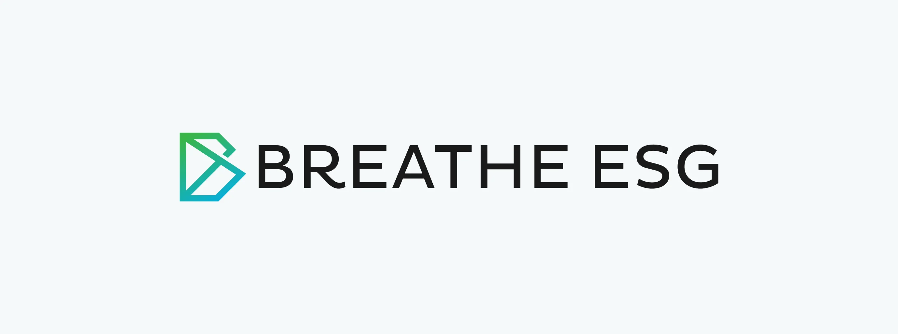
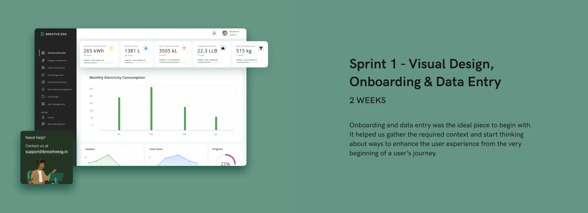
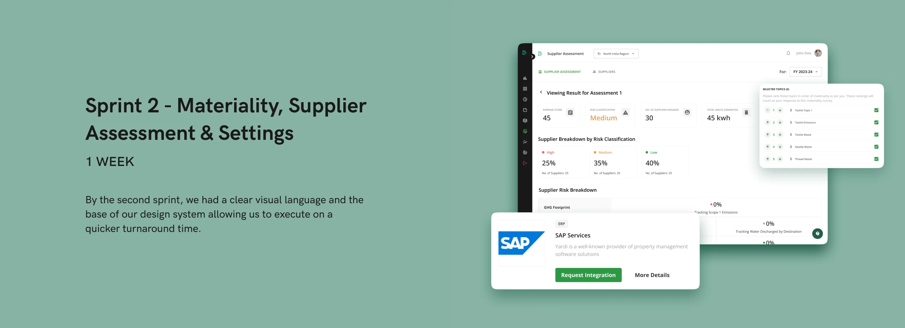
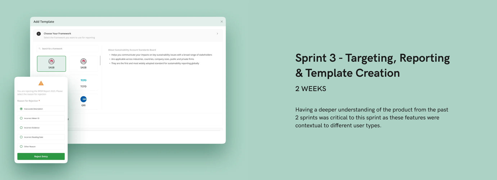
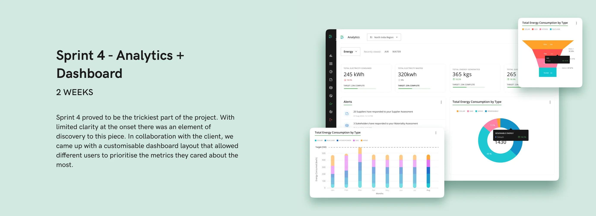
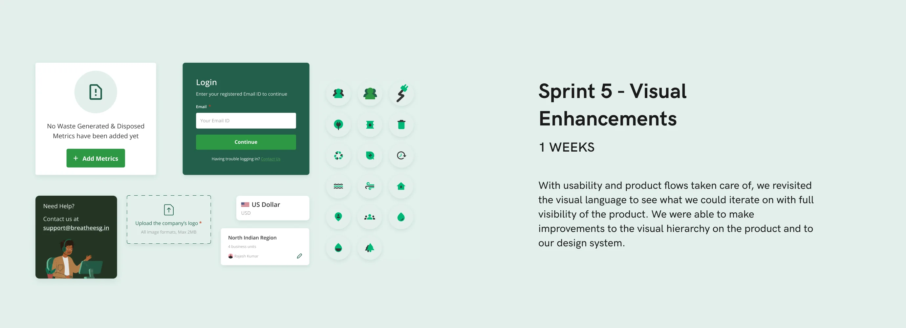
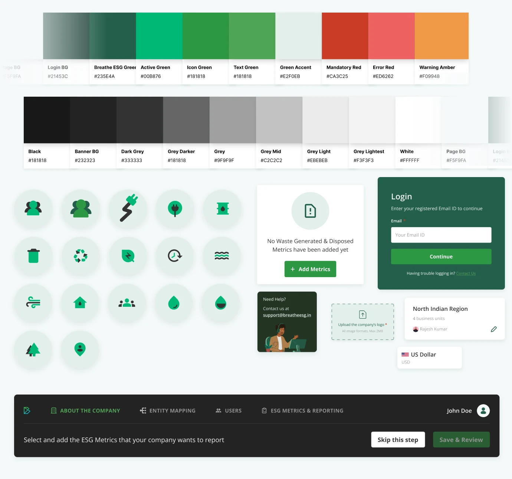
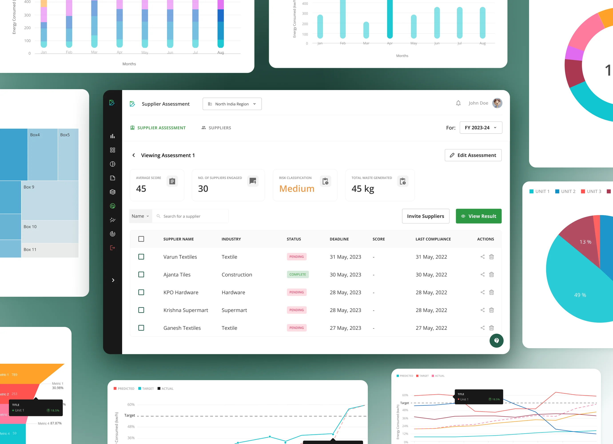
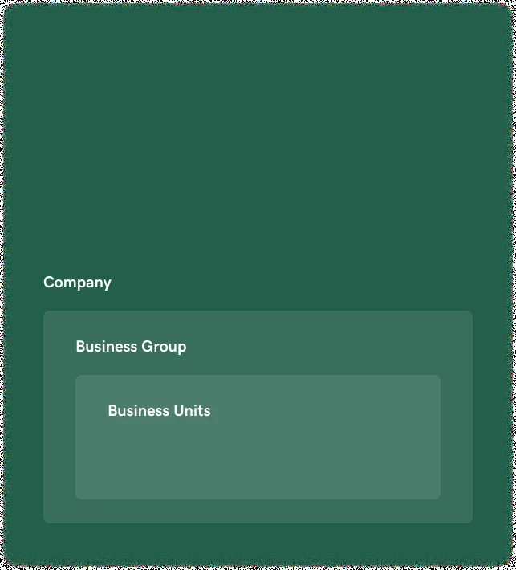

Breathe ESG
How we helped Breathe ESG redesign by leveraging design sprints
50%
Faster shipping, enabled by the new design system
- Status
- Finished
- Deliverables
- Design system and platform redesign
- Duration
- 8 weeks
- Year
- 2023
- Project scope
- Research
- Product strategy
- Design system
Breathe ESG is an enterprise SaaS for end-to-end sustainability management. We redesigned the platform in eight weeks by leveraging design sprints, with a design system from day 1.
THE BRIEF
Breathe ESG — environment, social, governance — is an enterprise SaaS for end-to-end sustainability management. Its platform is where technology meets sustainability, turning raw data into actionable insight for its customers.
They aim to simplify the complexities of ESG, making sustainability both accessible and actionable for everyone in an organisation.

Redesign the platform in 8 weeks
While they had an existing platform, it felt old and outdated which translated into declining confidence from their clients. The platform was functional but wasn’t optimised for the actual users.
That’s where we stepped in, and took on the challenge to redesign their platform within 8 weeks by leveraging design sprints.

Getting started
To get at the heart of what made their existing platform hard to use, we started out by getting an understanding of how ESG reporting worked as a whole. This helped us understand the complexity of each feature and informed our sprint breakdown.
We were also able to understand the reporting requirements of different industries and product usage of different user types in a system.
Structuring our design sprints
To successfully leverage design sprints, we came up with a set structure for each sprint.
This process helped us have quick turn around times, get our solutions validated by the stakeholders at Breathe ESG and ensured that we had enough time to iterate and prepare for handoff.






Design system from day 1
This approach enabled us setup the design components at the very onset of the project and helped us iterate faster as we went along.
This was beneficial in the long run as it accelerated turn around times and gave the design system time to evolve and grow over the course of the engagement.

Designing for data density
This approach enabled us setup the design components at the very onset of the project and helped us iterate faster as we went along.
This was beneficial in the long run as it accelerated turn around times and gave the design system time to evolve and grow over the course of the engagement.

Contextual hand-holding
The platform came with it’s own fair share of complexity, ranging from domain specific terminology to system specific responses. In order to make the platform easier for user’s to comprehend, we introduced tool-tips, toasts and easy filters on tables.

Singular method for data entry

We introduced a streamlined and easy-to-use data input method tailored to accommodate diverse user needs. The simplification not only enhanced the user experience but also extended to the tech implementation, making it a smooth and easy process.
Designing for different users by role
Most organisations have pre-defined levels of hierarchy and function. Breathe ESG caters to these constructs and provides role based access control (RBAC) and caters to all levels across the company.

Success story
The outcome
Following our engagement, Breathe ESG has experienced substantial product-led growth. A long-sought client finally signed with them after seeing the revamped platform.
Impact on sales
- Improved conversions with new design
- Faster and more effective demos leading to top of funnel growth
- Gained access to global markets and enterprises with the redesign
Product release cycles
- 50% faster shipping enabled by new design system
- Reduced time spent on front-end development and QC
Existing customers
- Elevated customer satisfaction and engagement
“Tibba Design Studio are perhaps one of the best product design studios I have worked with.
Professional to the core they are good at understanding client and end user requirements, breaking it down and providing detailed mockups that help you rethink your own solution, in a better light!
Highly recommend Rahul and team, if you or someone you know are looking for Product Design services!”
 Avinash PintoProduct Manager, Breathe ESG
Avinash PintoProduct Manager, Breathe ESG